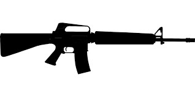
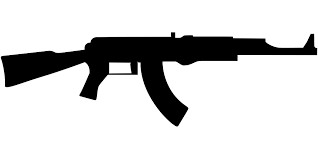
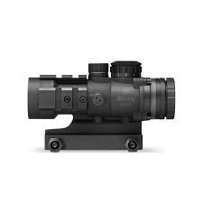
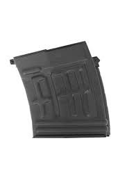

<h1 mat-dialog-title>{{ data.rifle || weaponConfiguration.rifle }}</h1>
<div mat-dialog-content>
  <!-- Weapons -->
  <div [ngSwitch]="weaponConfiguration.rifle">
    <div *ngSwitchDefault>
      
    </div>
    <div *ngSwitchCase="'M-16'">
      
    </div>
    <div *ngSwitchCase="'Ak-47'">
      
    </div>
  </div>

  <!-- Optics -->
  <div [ngSwitch]="weaponConfiguration.optic">
    <div *ngSwitchDefault>
      
    </div>
    <div *ngSwitchCase="'Red dot scope'">
      
    </div>
    <div *ngSwitchCase="'Acog scope'">
      
    </div>
  </div>

  <!-- Magazines -->
  <div [ngSwitch]="weaponConfiguration.magazine">
    <div *ngSwitchDefault>
      
    </div>
    <div *ngSwitchCase="'30 round magazine'">
      
    </div>
    <div *ngSwitchCase="'50 round magazine'">
      
    </div>
  </div>
</div>

<div mat-dialog-content>
  <div>
    <mat-form-field appearance="fill">
      <mat-label> Select a Rifle</mat-label>
      <mat-select [(ngModel)]="weaponConfiguration.rifle">
        <mat-option
          *ngFor="let rifle of rifles"
          [value]="rifle">
          {{ rifle }}
        </mat-option>
      </mat-select>
    </mat-form-field>
  </div>
  <div>
    <mat-form-field appearance="fill">
      <mat-label> Select an Optic</mat-label>
      <mat-select [(ngModel)]="weaponConfiguration.optic">
        <mat-option
          *ngFor="let optic of optics"
          [value]="optic">
          {{ optic }}
        </mat-option>
      </mat-select>
    </mat-form-field>
  </div>
  <div>
    <mat-form-field appearance="fill">
      <mat-label> Select a Magazine</mat-label>
      <mat-select [(ngModel)]="weaponConfiguration.magazine">
        <mat-option
          *ngFor="let magazine of magazines"
          [value]="magazine">
          {{ magazine }}
        </mat-option>
      </mat-select>
    </mat-form-field>
  </div>


</div>
<div mat-dialog-actions>
  <button class="mat-raised-button" (click)="close()">Close</button>
  <button class="mat-raised-button mat-primary" (click)="save()">Save</button>
</div>
